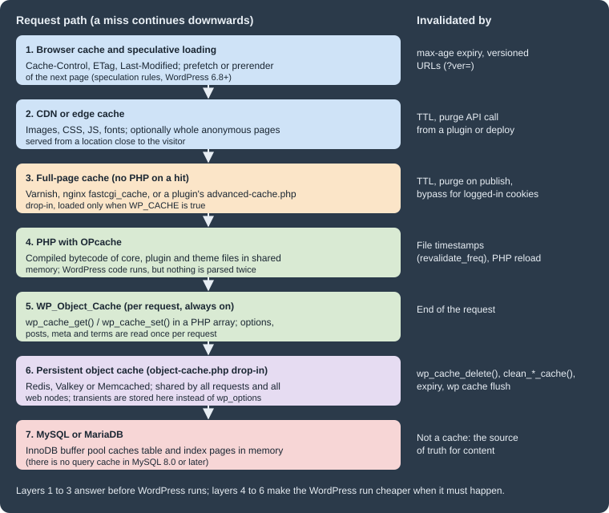

Performance and Caching
|
This content was generated with the assistance of AI and should be verified against the official documentation before being relied on in production. |
This page was written against WordPress 7.1.3 (released 2026-10-06; 7.1.4, a security release of 2026-10-28, is the version to run in production), PHP 8.4, WP-CLI 2.12.0 and the Redis Object Cache plugin 3.0.0, and checked on 2026-10-28. WordPress 7.x needs PHP 7.4 or later and recommends PHP 8.3 or later; WordPress 7.2 is in beta and due in December 2026. The page explains where a WordPress request spends its time, how to measure it, and which cache or core feature removes each cost. It covers page caching, a persistent object cache on Redis, OPcache, autoloaded options, the image and script attributes that core adds by itself, and speculative loading, whose defaults became configurable by constants and environment variables in WordPress 7.1.
It is written for administrators and developers who run the Lumen Press site in production. The developer-side
caching APIs (wp_cache_get(), transients, cache groups in plugin code) are covered in
Options, Transients and Object Cache, and adding servers
in Scaling and High Availability.
Where the time goes: caching layers
A WordPress page view runs PHP, loads WordPress core, the active plugins and the theme, reads options, posts, metadata and terms from MySQL or MariaDB, renders blocks to HTML, and sends that HTML to a browser that then fetches images, CSS, JavaScript and fonts. Each step has a cache in front of it, and a request that a layer answers never reaches the layers below:

| Layer | What it saves | Provided by | Where it is covered |
|---|---|---|---|
Browser cache and speculative loading |
The whole request for repeat or next-page views |
HTTP headers from the web server; speculation rules from core (6.8+) |
|
CDN or edge cache |
Transfer time for assets, sometimes for whole pages |
A CDN provider; core has no CDN setting |
|
Full-page cache |
PHP and the database for anonymous page views |
A caching plugin ( |
|
OPcache |
Parsing and compiling PHP files |
PHP |
|
Per-request object cache |
Repeated queries within one request |
Core ( |
|
Persistent object cache |
Repeated queries across requests |
An |
|
Database |
Disk reads |
InnoDB buffer pool |
Core itself ships only the per-request object cache, the image and script attributes and the speculation rules
described below. It has no page cache and no front-end CSS or JavaScript concatenation or minification; every other
layer comes from the server, the host, a CDN or a plugin. The only concatenation in core is on admin screens
(load-scripts.php and load-styles.php).
Measuring before changing
Caching hides slowness instead of removing it, so measure with and without the caches: field data from real visitors, lab data from a controlled test, and server-side profiling of single requests.
Core Web Vitals
Google’s Core Web Vitals are three field metrics, each judged at the 75th percentile of page views:
| Metric | Measures | Good | Poor |
|---|---|---|---|
Largest Contentful Paint (LCP) |
When the largest image or text block becomes visible |
2.5 s or less |
Over 4 s |
Interaction to Next Paint (INP) |
Responsiveness to clicks, taps and key presses across the visit |
200 ms or less |
Over 500 ms |
Cumulative Layout Shift (CLS) |
Unexpected movement of content while the page loads |
0.1 or less |
Over 0.25 |
INP replaced First Input Delay (FID) as a Core Web Vital in March 2024, so guides that still optimise for FID are out of date. Field data comes from the Chrome User Experience Report (shown by PageSpeed Insights and Search Console); lab data comes from Lighthouse in Chrome DevTools or PageSpeed Insights. A Lighthouse score is a lab estimate on a simulated mid-range phone, not a measurement of real visitors, and the two can disagree.
For WordPress sites, LCP is usually limited by the server response time and the hero or featured image, INP by JavaScript from plugins, page builders and third-party tags, and CLS by images without dimensions, late web fonts and injected banners.
Time to First Byte
Time to First Byte (TTFB) is the time until the first byte of the HTML response arrives. It is not a Core Web Vital,
but it comes before LCP and is where server-side caching shows up. web.dev treats 0.8 seconds or less as good.
curl reports it directly; on the Lumen Press test site, three requests to an uncached post gave:
for i in 1 2 3; do
curl -s -o /dev/null \
-w 'status=%{http_code} ttfb=%{time_starttransfer}s total=%{time_total}s size=%{size_download}\n' \
https://lumenpress.test/spring-catalogue/
donestatus=200 ttfb=0.154090s total=0.160213s size=84745
status=200 ttfb=0.094803s total=0.107877s size=84745
status=200 ttfb=0.108154s total=0.113455s size=84745Taken on the same machine, these show only PHP and database time; measure from outside the data centre too, and repeat each measurement, since the first request after a deploy or cache flush is always slower.
Query Monitor and Site Health
Query Monitor is a free plugin from the WordPress.org directory, maintained outside core, that adds a developer panel to the admin bar. For the current request it lists every database query with its caller and time, duplicate and slow queries, the hooks that ran, HTTP API calls, PHP errors, enqueued scripts and styles, and the object cache hit rate. It is a development and staging tool; install it in production only temporarily and only for administrators.
Tools > Site Health runs several performance tests in core (see Debugging, Site Health and Troubleshooting for the screen itself):
| Test | Since | What it checks, and the filter that tunes it |
|---|---|---|
Page cache |
6.1 |
Requests the home page and looks for caching headers ( |
Persistent object cache |
6.1 |
Recommends one when the site is large: more than 500 autoloaded options or 100 KB of them, or more than 1,000 rows in |
Autoloaded options |
6.6 |
Reports a critical issue when autoloaded options exceed 800,000 bytes ( |
Opcode cache |
7.0 |
Direct test that reports whether OPcache is enabled (the Server section of the Info tab shows the details as well); the PHP version test flags outdated PHP |
The page cache test sends a loopback request from the server to itself, so it fails when loopbacks are blocked; that is a separate problem that also breaks WP-Cron and the editors.
Page caching
A full-page cache stores the HTML of a page and returns it without starting PHP or opening a database connection. For anonymous visitors on a content site, this is by far the largest single gain: a cached response takes milliseconds and costs almost nothing in CPU, while an uncached WordPress page takes tens to hundreds of milliseconds.
WP_CACHE and the advanced-cache.php drop-in
The WP_CACHE constant does not cache anything. Early in wp-settings.php, before plugins load, core checks it and
includes wp-content/advanced-cache.php if that file exists and the enable_loading_advanced_cache_dropin filter
(4.6) allows it. A caching plugin writes that drop-in and sets the constant in wp-config.php; the drop-in looks up the
current URL in its store and, on a hit, prints the stored page and exits.
// wp-config.php, above the "That's all, stop editing!" line.
// Loads wp-content/advanced-cache.php if a caching plugin has installed it.
define( 'WP_CACHE', true );The Advanced Administration Handbook names WP Super Cache, W3 Total Cache and Cache Enabler as caching plugins; many
others exist, and managed hosts usually run their own page cache and ask that no caching plugin be installed. Two
common pitfalls follow from how the drop-in works. Removing a caching plugin by deleting its folder leaves
advanced-cache.php and WP_CACHE behind, so the site keeps serving old pages or fails on a missing include; deactivate
the plugin through WordPress so it can clean up. And because the drop-in runs before plugins load, it cannot ask
WordPress whether a user is logged in; it decides from cookies.
What must not be cached
A page cache is safe only for responses that are the same for every visitor. A cache configuration for WordPress bypasses:
-
requests carrying the
wordpress_logged_in_cookie (logged-in users),wp-postpass_(password-protected posts) orcomment_author_(a visitor who just commented and should see the comment awaiting moderation); -
POSTrequests, and URLs with a query string unless the cache is configured per parameter; -
/wp-admin/,/wp-login.php,/wp-cron.php,/xmlrpc.phpand, in most cases,/wp-json/; -
per-visitor pages: for Lumen Press the
/wishlist/pages; for shops the cart, checkout and account pages (WooCommerce caching is covered in Performance and Security).
Nonces embedded in a cached page are a subtler trap. A nonce is valid for 12 to 24 hours, so a page cached for longer serves expired nonces and any form or AJAX action that relies on them starts failing with a 403. Keep cache lifetimes below 12 hours for pages with nonces, or fetch the nonce with a separate uncached request.
A reverse proxy cache: nginx fastcgi_cache
A cache in the web server or in a reverse proxy in front of it (Varnish, nginx, a host’s proxy) is faster than a plugin
cache because PHP never starts. On nginx with PHP-FPM, fastcgi_cache does it with a few directives. The Lumen Press
production configuration caches anonymous HTML for ten minutes, bypasses the cases above, serves stale pages while
PHP is down or a page is being refreshed, and reports the cache status in an X-Cache header:
# /etc/nginx/conf.d/lumenpress.conf
fastcgi_cache_path /var/cache/nginx/lumenpress levels=1:2 keys_zone=LUMEN:64m
max_size=1g inactive=60m use_temp_path=off;
fastcgi_cache_key "$scheme$request_method$host$request_uri";
map $http_cookie $lumen_skip_cookie {
default 0;
"~*wordpress_logged_in_|wp-postpass_|comment_author_|woocommerce_items_in_cart" 1;
}
server {
listen 80;
server_name lumenpress.test;
root /var/www/html;
index index.php;
set $skip_cache $lumen_skip_cookie;
if ($request_method = POST) { set $skip_cache 1; }
if ($query_string != "") { set $skip_cache 1; }
if ($request_uri ~* "^/(wp-admin/|wp-json/|wp-login\.php|xmlrpc\.php|wp-cron\.php|wishlist/)") {
set $skip_cache 1;
}
location / {
try_files $uri $uri/ /index.php?$args;
}
location ~* \.(?:avif|webp|jpe?g|png|gif|svg|css|js|woff2)$ {
add_header Cache-Control "public, max-age=31536000, immutable" always;
access_log off;
}
# Never execute PHP from uploads.
location ~* ^/wp-content/uploads/.*\.(?:php\d*|phtml|phar)$ { deny all; }
location ~ \.php$ {
try_files $uri =404;
include fastcgi_params;
fastcgi_param SCRIPT_FILENAME $document_root$fastcgi_script_name;
fastcgi_pass 127.0.0.1:9000;
fastcgi_cache LUMEN;
fastcgi_cache_valid 200 301 10m;
fastcgi_cache_use_stale error timeout updating http_500 http_503;
fastcgi_cache_lock on;
fastcgi_cache_bypass $skip_cache;
fastcgi_no_cache $skip_cache;
add_header X-Cache $upstream_cache_status always;
}
}nginx -t accepts this file on nginx 1.29. The X-Cache header reads MISS, HIT, BYPASS, EXPIRED or STALE,
and Site Health’s page cache test recognises a HIT in it. The one-year max-age on static files is safe because
WordPress adds a ?ver= query string to the URLs of enqueued scripts and styles, which changes when their version
changes. Media files do not get such a string, so a replaced image needs a new file name.
Open-source nginx has no purge command, so a published change appears only when the entry expires. That is why the
lifetime above is short. Sites that need instant updates use a proxy with purging (Varnish with PURGE or BAN
requests, a host’s cache, or nginx with a third-party purge module) together with a plugin that sends a purge when a
post is saved. The general nginx setup for WordPress is in
Web Servers: Apache and nginx.
CDNs and edge caching
A content delivery network serves files from locations close to the visitor. For WordPress the usual first step is offloading static assets (uploads, theme and plugin CSS and JavaScript, fonts); the Advanced Administration Handbook notes that newer CDNs can also cache the full HTML at the edge. Core has no CDN setting: assets reach the CDN either through a pull zone in front of the whole site, through DNS (the CDN becomes the reverse proxy), or through a plugin that rewrites asset URLs. A full-page edge cache needs the same bypass rules as any page cache, and a way to purge it on publish.
Persistent object cache
WordPress always has an object cache: the WP_Object_Cache class in wp-includes/class-wp-object-cache.php, used
through wp_cache_get(), wp_cache_set(), wp_cache_delete() and the other wp_cache_*() functions. Core caches
options (including the alloptions array of all autoloaded options), posts, post meta, terms, users and query results
in named groups. By default the cache is a PHP array that lives for one request, so the next request starts empty and
runs the same queries again.
A persistent object cache keeps those entries in a shared in-memory store between requests. Core supports it through
a drop-in: if wp-content/object-cache.php exists, wp_start_object_cache() loads it instead of the built-in class,
and wp_using_ext_object_cache() returns true. The drop-in implements the same functions on top of Redis, Valkey,
Memcached or APCu. With a persistent cache, transients are stored in the cache instead of in wp_options. An APCu cache
is local to one server, so it suits a single web node only; Redis, Valkey and Memcached are shared by all nodes.
A persistent object cache helps logged-in users, the admin, the REST API, WP-CLI and every page the page cache cannot serve. It does not replace a page cache, and it does not fix slow queries that are not cached in the first place.
Redis Object Cache on the Lumen Press stack
The Redis Object Cache plugin (3.0.0, by Till Krüss) ships a drop-in and bundles the Predis client, so it works without
the phpredis extension; it uses PhpRedis or Relay when they are installed. The following Compose file runs Lumen
Press locally with MariaDB, Redis 7 and the plugin’s settings. The general Compose, wp-env and Playground setups are in
Local Development Environments.
# compose.yaml: Lumen Press with a Redis object cache (local testing only)
x-wordpress-env: &wordpress-env
WORDPRESS_DB_HOST: db
WORDPRESS_DB_USER: wordpress
WORDPRESS_DB_PASSWORD: ${DB_PASSWORD:?set DB_PASSWORD}
WORDPRESS_DB_NAME: wordpress
# The image's wp-config.php evaluates this variable at run time, so every
# container that loads WordPress (web and WP-CLI) needs it.
WORDPRESS_CONFIG_EXTRA: |
define( 'WP_REDIS_HOST', 'redis' );
define( 'WP_REDIS_PORT', 6379 );
define( 'WP_REDIS_PREFIX', 'lumenpress:' );
define( 'WP_REDIS_TIMEOUT', 1 );
define( 'WP_REDIS_READ_TIMEOUT', 1 );
WP_SPECULATIVE_LOADING_DEFAULT_EAGERNESS: moderate
services:
db:
image: mariadb:11.8
environment:
MARIADB_DATABASE: wordpress
MARIADB_USER: wordpress
MARIADB_PASSWORD: ${DB_PASSWORD:?set DB_PASSWORD}
MARIADB_RANDOM_ROOT_PASSWORD: "1"
volumes:
- db-data:/var/lib/mysql
redis:
image: redis:7-alpine
command: ["redis-server", "--maxmemory", "256mb", "--maxmemory-policy", "allkeys-lru"]
wordpress:
image: wordpress:7.1.3-php8.4-apache
depends_on: [db, redis]
ports:
- "8080:80"
environment:
<<: *wordpress-env
volumes:
- wp-data:/var/www/html
cli:
image: wordpress:cli-php8.4
profiles: ["cli"]
user: "33:33"
depends_on: [wordpress]
environment:
<<: *wordpress-env
HOME: /tmp
volumes:
- wp-data:/var/www/html
volumes:
db-data:
wp-data:The comment in the file records a pitfall found while testing it. The official image’s wp-config.php reads
WORDPRESS_CONFIG_EXTRA with getenv() on every request instead of copying it into the file. A WP-CLI container
without the variable therefore does not see WP_REDIS_HOST; the plugin then falls back to 127.0.0.1 and
wp redis enable fails with "Connection refused". The YAML anchor gives both containers the same environment. On a
normal server, the same constants go into wp-config.php directly.
With the stack running (DB_PASSWORD set in the shell or an .env file), install WordPress and enable the cache:
export DB_PASSWORD='<a-local-password>'
docker compose up -d
wp() { docker compose run --rm -T cli php -d memory_limit=512M /usr/local/bin/wp "$@"; }
wp core install --url=http://localhost:8080 --title="Lumen Press" \
--admin_user=admin --admin_password='<a-local-password>' \
--admin_email=admin@lumenpress.test --skip-email
wp rewrite structure '/%postname%/'
wp plugin install redis-cache --version=3.0.0 --activate
wp redis enable
wp cache type
wp redis statuswp redis enable copies the plugin’s drop-in to wp-content/object-cache.php. Shortened output:
Success: Object cache enabled.
Redis
Status: Connected
Client: Predis (v2.4.1)
Drop-in: Valid
Disabled: No
Redis Version: 7.4.11
WP_REDIS_HOST: "redis"
WP_REDIS_PORT: 6379
WP_REDIS_TIMEOUT: 1
WP_REDIS_READ_TIMEOUT: 1
WP_REDIS_PREFIX: "lumenpress:"wp cache type is a core WP-CLI command and works with any drop-in: it prints Default without one and the backend
name (Redis) with one. wp plugin list --status=dropin lists the drop-in as object-cache.php.
Checking that the cache works
The object cache counts its own hits and misses. This script, run twice with wp eval-file cache-stats.php, reads ten
posts and an option and prints the counters and the number of database queries:
<?php
// cache-stats.php: run it twice with `wp eval-file cache-stats.php`.
get_posts( array( 'post_type' => 'post', 'numberposts' => 10 ) );
get_option( 'blogname' );
global $wp_object_cache;
printf(
"cache=%s hits=%d misses=%d queries=%d\n",
wp_using_ext_object_cache() ? 'persistent' : 'per-request',
$wp_object_cache->cache_hits,
$wp_object_cache->cache_misses,
get_num_queries()
);Source: Code Reference: WP_Object_Cache
With the Redis drop-in, after wp cache flush, and then with the plugin deactivated (which removes the drop-in):
cache=persistent hits=131 misses=31 queries=5
cache=persistent hits=141 misses=13 queries=0
cache=per-request hits=134 misses=32 queries=9
cache=per-request hits=134 misses=32 queries=9The second persistent run needs no database query at all after WordPress has loaded, while the per-request cache repeats
the same nine queries every time. On the Redis side, redis-cli info stats reports server-wide keyspace_hits and
keyspace_misses, and keys are named prefix, blog prefix, group and key, such as
lumenpress:wp:options:alloptions.
Transients move to Redis with an expiry, and no row is written to wp_options:
wp transient set lumen_distributor_stock '{"9780000000001":12}' 3600
wp db query "SELECT COUNT(*) FROM wp_options WHERE option_name LIKE '%lumen_distributor_stock%'"
redis-cli ttl 'lumenpress:wp:transient:lumen_distributor_stock'The query returns 0 and ttl returns about 3594 seconds. This is why transients must never be treated as storage:
with a persistent cache they live in memory and can be evicted at any time, long before their expiry.
Running Redis for WordPress
-
Memory and eviction. Give Redis a
maxmemorylimit and an eviction policy such asallkeys-lru, as in the Compose file, so a full cache evicts old entries instead of refusing writes. Eviction policies are explained in Redis: Architecture, Keyspace and Eviction, and Redis in general in the Redis Reference. -
Several sites on one server. Give each site its own
WP_REDIS_PREFIX(or its ownWP_REDIS_DATABASEnumber).wp cache flushand the plugin’s flush button callFLUSHDB, which empties the whole Redis database, including other sites that share it;WP_REDIS_SELECTIVE_FLUSHlimits flushes to the prefix, at the cost of a slow Lua scan. -
Security. Redis must not be reachable from the internet. Keep it on a private network, require a password or an ACL user (
WP_REDIS_PASSWORDacceptsarray( 'user', 'password' )), and use TLS (WP_REDIS_SCHEMEset totls) when the connection leaves the host. See Redis: Security. -
Valkey and managed services. Valkey, the Linux Foundation fork of Redis, speaks the same protocol, so Redis clients and drop-ins connect to it unchanged; managed services such as Amazon ElastiCache work the same way. See Redis Software, Redis Cloud, Kubernetes and Valkey.
-
When Redis is down. With the default settings, the site stops: stopping the Redis container of the test site made every page return HTTP 500 with "Error establishing a Redis connection". Defining
WP_REDIS_GRACEFULastruelets the drop-in fall back to the per-request cache and the page returned 200. The plugin’s README warns that this mode can corrupt cached data: changes made during the outage never reach Redis, so it serves stale entries once it is back. Flush the cache after an outage when graceful mode is on. -
Removing the plugin. Deactivating Redis Object Cache removes its drop-in. Deleting the plugin folder by hand leaves
object-cache.phpbehind; on the test site every page then returned HTTP 500 with "Error establishing a Redis connection", because the drop-in loads the Predis client from the plugin folder.
OPcache
PHP compiles each script to bytecode before running it, and OPcache keeps that bytecode in shared memory so the next request skips parsing and compiling. A WordPress request includes hundreds of files, so OPcache is essential, and it is enabled by default in the official Docker images and most hosts. The settings and their values for Lumen Press are in Requirements and Hosting, and OPcache and the JIT compiler are explained in PHP: OPcache, JIT and Performance.
Three points are specific to WordPress:
-
opcache.max_accelerated_filesmust exceed the number of PHP files of core plus all plugins and themes; the official image’s value of 4000 is low for a site with many plugins. Tools > Site Health > Info shows whether OPcache is on. -
With
opcache.validate_timestamps=0(common in container images built at deploy time), PHP never notices changed files, so plugin and core updates done from the dashboard do not take effect until PHP-FPM is reloaded. Either keep timestamp validation on (with arevalidate_freqof a few seconds to a minute) or reload PHP-FPM after every update. -
The command line has its own OPcache, disabled by default (
opcache.enable_cli=0).wp eval 'opcache_reset();'therefore resets nothing in the web server’s PHP; reload PHP-FPM or Apache instead.
The JIT compiler (PHP 8.0+) speeds up CPU-bound code. WordPress spends most of its time on database and file I/O and on
string handling, so the JIT gives little measurable gain for a typical site and is off in the official image
(opcache.jit=disable).
Autoloaded options
On every request, wp_load_alloptions() reads all autoloaded rows of wp_options in one query and caches them as
alloptions. That is efficient for small, frequently used settings, and costly when plugins autoload large values
that most pages never use: the data is read on every request and, with a persistent cache, transferred from Redis as one
large entry.
WordPress 6.6 changed how autoloading is stored and decided:
autoload value |
Meaning |
|---|---|
|
Explicitly autoloaded ( |
|
Explicitly not autoloaded ( |
|
No explicit choice; currently autoloaded |
|
WordPress decided to autoload it |
|
WordPress decided not to autoload it, for example because it is too large |
|
Legacy values, treated as |
An option added without an explicit $autoload whose value is larger than 150,000 bytes (the
wp_max_autoloaded_option_size filter) is stored as auto-off. wp_autoload_values_to_autoload() returns the
values that are loaded: yes, on, auto-on and auto. Site Health reports a critical issue above 800,000 bytes in
total.
To measure the total and find the largest options, query the four values directly:
SELECT autoload, COUNT(*) AS options, SUM(LENGTH(option_value)) AS bytes
FROM wp_options
GROUP BY autoload
ORDER BY bytes DESC;
SELECT option_name, LENGTH(option_value) AS bytes
FROM wp_options
WHERE autoload IN ('yes', 'on', 'auto-on', 'auto')
ORDER BY bytes DESC
LIMIT 5;Run through wp db query, on the fresh Lumen Press test site:
autoload options bytes
on 98 13590
auto 18 1546
off 7 14
option_name bytes
rewrite_rules 8494
wp_user_roles 3133
cron 1514
widget_block 890
sidebars_widgets 198A fresh site autoloads about 15 KB. Sites with hundreds of kilobytes usually have leftovers from deleted plugins, page
builder caches or logs stored as options. wp option list --autoload=on --format=total_bytes is quicker but, in WP-CLI
2.12.0, --autoload=on matches only the on and yes values and misses auto and auto-on, so it under-reports
(13,590 bytes here instead of 15,136).
To stop autoloading an option, use WP-CLI or, from code, wp_set_option_autoload() (6.4) or
wp_set_option_autoload_values() for several at once:
wp option get-autoload lumen_catalog_import_log
wp option set-autoload lumen_catalog_import_log offBefore switching an option off, check that it belongs to an inactive or deleted plugin, or that it is rarely read; an
option that every page reads gets slower when it is no longer autoloaded, because it then costs a query of its own
(unless a persistent object cache holds it). Deleting the options of a removed plugin (wp option delete) is the
cleaner fix. In plugin code, pass false as the autoload argument for large or rarely read options, as described in
Options, Transients and Object Cache.
Image performance
Images are usually the largest bytes on a page and often the LCP element. Core adds loading attributes to images and
iframes automatically, in the content, in blocks, in wp_get_attachment_image() and for featured images:
| Feature | Since | Behaviour |
|---|---|---|
|
5.5 |
Native browser lazy loading, so images below the fold load only when the visitor scrolls near them |
|
5.7 |
The same for embeds such as videos and maps |
Skip lazy loading for the first images |
5.9, threshold 3 since 6.3 |
The first content images are not lazy-loaded, because lazy-loading the LCP image delays it. |
|
6.1 |
Lets the browser decode images off the main thread |
|
6.3 |
Added to the image most likely to be the LCP element: the first non-lazy image of at least 50,000 pixels ( |
|
6.7 |
Prepended to the |
AVIF uploads |
6.5 |
AVIF can be uploaded and resized where the server’s image library supports it |
wp_get_loading_optimization_attributes() (6.3) makes these decisions in one place. For a Lumen Press post with a
featured image and three image blocks, rendered by Twenty Twenty-Five, core produced this HTML (attributes shortened,
srcset omitted):
<!-- Featured image: the LCP candidate -->
<img width="1600" height="1000" src="https://lumenpress.test/wp-content/uploads/2026/10/cover1.jpg"
class="attachment-post-thumbnail size-post-thumbnail wp-post-image" decoding="async" fetchpriority="high"
sizes="(max-width: 1600px) 100vw, 1600px" />
<!-- First and second content images: inside the threshold, not lazy -->
<img decoding="async" width="1024" height="640" src="https://lumenpress.test/wp-content/uploads/2026/10/cover1-1024x640.jpg"
alt="Cover 1" class="wp-image-4" sizes="(max-width: 1024px) 100vw, 1024px" />
<img decoding="async" width="1024" height="640" src="https://lumenpress.test/wp-content/uploads/2026/10/cover2-1024x640.jpg"
alt="Cover 2" class="wp-image-5" sizes="(max-width: 1024px) 100vw, 1024px" />
<!-- Third content image: lazy, with sizes="auto" -->
<img loading="lazy" decoding="async" width="1024" height="640" src="https://lumenpress.test/wp-content/uploads/2026/10/cover3-1024x640.jpg"
alt="Cover 3" class="wp-image-6" sizes="auto, (max-width: 1024px) 100vw, 1024px" />The featured image counts towards the threshold of three, so only the third content image is lazy. Every image also
carries width and height, which lets the browser reserve space and avoids layout shift (CLS). Custom templates that
print images with hand-written <img> tags lose all of this; use wp_get_attachment_image() or the Image block.
A template that knows better than the heuristics can set the attributes itself. Core never overrides attributes that are already present, so this call in a Lumen Press book template marks the cover as the LCP image and keeps it eager:
echo wp_get_attachment_image(
get_post_thumbnail_id(),
'large',
false,
array(
'fetchpriority' => 'high',
'loading' => false,
)
);The output has fetchpriority="high" and no loading attribute. Only one image per page should be marked high
priority; several cancel each other out. To lazy-load nothing on a page type, filter wp_lazy_loading_enabled; to
remove sizes="auto", return false from wp_img_tag_add_auto_sizes.
Image formats and conversion are covered in Media Library, including the
image_editor_output_format filter that makes WordPress write AVIF or WebP sub-sizes from JPEG uploads. Responsive
images, formats and compression in general are covered in
Media Optimization for the Web.
Speculative loading
Speculative loading lets the browser fetch, or fully render, the next page before the visitor clicks a link, so the
navigation feels instant. It uses the Speculation Rules API: a <script type="speculationrules"> element with JSON that
tells the browser which links to prefetch or prerender and how eagerly. WordPress 6.8 added it to core (it was
previously the Speculative Loading feature plugin). Chromium-based browsers support the API; other browsers ignore the
script, so it is safe to send everywhere.
The default rules
By default, core prints speculation rules only for visitors who are not logged in and only when pretty permalinks are
enabled. The default is prefetch with conservative eagerness: the browser fetches the next page’s HTML when the
visitor starts to click or tap a link (on pointer down). On the Lumen Press test site, the footer contained:
<script type="speculationrules">
{"prefetch":[{"source":"document","where":{"and":[{"href_matches":"/*"},{"not":{"href_matches":["/wp-*.php","/wp-admin/*","/wp-content/uploads/*","/wp-content/*","/wp-content/plugins/*","/wp-content/themes/twentytwentyfive/*","/*\\?(.+)"]}},{"not":{"selector_matches":"a[rel~=\"nofollow\"]"}},{"not":{"selector_matches":".no-prefetch, .no-prefetch a"}}]},"eagerness":"conservative"}]}
</script>The rule excludes WordPress’s PHP endpoints, the admin, everything under wp-content, URLs with a query string and
links with rel="nofollow". A link or a block with the class no-prefetch (and, in prerender mode, no-prerender) is
also excluded.
The three eagerness values are conservative (on pointer or touch down), moderate (on hover for about 200 ms on
desktop) and eager (as soon as the browser finds the link, or soon after).
prerender also runs the target page’s JavaScript and renders it in a hidden tab, which makes the navigation instant
but costs more server and client resources.
Changing the defaults: constants and environment variables (7.1)
WordPress 7.1 lets a site or host change what the auto default resolves to without writing a plugin. Two values are
read from a constant or, if no constant is defined, from an environment variable of the same name:
| Name | Accepted values | Core default |
|---|---|---|
|
|
|
|
|
|
Invalid values are ignored, and so is immediate, a valid API value that WordPress does not allow for the
document-level rules it generates. Lumen Press runs its production site behind a full-page cache, where an extra
prerendered request is cheap, so it uses:
// wp-config.php (WordPress 7.1 or later)
define( 'WP_SPECULATIVE_LOADING_DEFAULT_MODE', 'prerender' );
define( 'WP_SPECULATIVE_LOADING_DEFAULT_EAGERNESS', 'moderate' );These were checked with wp eval 'var_export( wp_get_speculation_rules_configuration() );'. With the two constants
the result was prerender and moderate, and the page then printed a "prerender" rule with "eagerness":"moderate".
With the eagerness constant removed and WP_SPECULATIVE_LOADING_DEFAULT_EAGERNESS=eager in the environment, the result
was eager. With immediate in the environment it fell back to conservative. A logged-in user got NULL
(disabled). The Compose file above sets the environment variable for the web container; Apache’s PHP module and
PHP-FPM must pass it through (PHP-FPM clears the environment unless clear_env = no or an env[...] line is set).
The constants change only the auto default. A plugin that sets an explicit mode or eagerness through the
wp_speculation_rules_configuration filter still wins, and returning null from that filter disables speculative
loading entirely. Before 7.1 that filter, in a plugin or must-use plugin, was the only way to change the defaults.
Excluding URLs
Any URL whose response changes per visitor, or whose GET request changes state, must be excluded: prefetching a "add to
wishlist" or "log out" link performs the action. Core already excludes wp-login.php and the admin. Lumen Press adds
its wishlist pages with wp_speculation_rules_href_exclude_paths, in the must-use plugin shown in the next section.
With that filter and the 7.1 constants, the printed rule became:
<script type="speculationrules">
{"prerender":[{"source":"document","where":{"and":[{"href_matches":"/*"},{"not":{"href_matches":["/wp-*.php","/wp-admin/*","/wp-content/uploads/*","/wp-content/*","/wp-content/plugins/*","/wp-content/themes/twentytwentyfive/*","/*\\?(.+)","/wishlist/*"]}},{"not":{"selector_matches":"a[rel~=\"nofollow\"]"}},{"not":{"selector_matches":".no-prerender, .no-prerender a"}},{"not":{"selector_matches":".no-prefetch, .no-prefetch a"}}]},"eagerness":"moderate"}]}
</script>Further rules (for example, prerendering a specific landing page eagerly) can be added with the
wp_load_speculation_rules action, which receives the WP_Speculation_Rules object.
Two side effects need attention. Analytics scripts that count page views on load count prerendered pages that the
visitor never opens, unless they check document.prerendering or support prerendering. And server load rises with
eagerness, which is why conservative is the default and why a site without a page cache should not raise it.
Script loading strategies
A <script src> without async or defer blocks HTML parsing while it downloads and runs. Since WordPress 6.3,
wp_register_script() and wp_enqueue_script() accept an $args array with a strategy key:
-
deferruns the script after the document is parsed, in the order the scripts appear. It suits most front-end code that needs the DOM. -
asyncruns the script as soon as it arrives, in no particular order. It suits independent scripts such as analytics beacons. -
in_footer(trueorfalse) replaces the old boolean fifth argument. Withdefer, printing in the head is fine and lets the browser discover the file early. -
fetchpriority(high,loworauto, 6.9) sets the download priority. Core marks its own non-critical scripts, such ascomment-reply, aslow.
The Lumen Press must-use plugin enqueues the catalogue filter script deferred and a statistics beacon async, and adds the speculative-loading exclusion:
<?php
/**
* Plugin Name: Lumen Press Performance
* Description: Script loading strategies and speculative-loading exclusions for Lumen Press.
* Version: 0.1.0
* Requires at least: 6.9
* Requires PHP: 7.4
*/
defined( 'ABSPATH' ) || exit;
add_action(
'wp_enqueue_scripts',
static function () {
// Catalogue filters: needs the DOM, keeps document order with other deferred scripts.
wp_enqueue_script(
'lumen-catalog-filters',
content_url( 'mu-plugins/lumen-performance/filters.js' ),
array(),
'0.1.0',
array(
'strategy' => 'defer',
'in_footer' => false,
)
);
// Analytics beacon: independent of other scripts and of the DOM.
wp_enqueue_script(
'lumen-stats',
content_url( 'mu-plugins/lumen-performance/stats.js' ),
array(),
'0.1.0',
array( 'strategy' => 'async' )
);
}
);
// Never prefetch or prerender the wishlist pages: they change per visitor.
add_filter(
'wp_speculation_rules_href_exclude_paths',
static function ( array $paths ): array {
$paths[] = '/wishlist/*';
return $paths;
}
);Saved as wp-content/mu-plugins/lumen-performance.php, it produced these tags (the first in the <head>):
<script data-wp-strategy="defer" defer id="lumen-catalog-filters-js" src="https://lumenpress.test/wp-content/mu-plugins/lumen-performance/filters.js?ver=0.1.0"></script>
<script async data-wp-strategy="async" id="lumen-stats-js" src="https://lumenpress.test/wp-content/mu-plugins/lumen-performance/stats.js?ver=0.1.0"></script>The data-wp-strategy attribute records the intended strategy. WordPress downgrades the actual one when the
dependency graph would break, because a deferred or async script would otherwise run after code that needs it.
wp_print_scripts() with these registrations shows the rules:
| Setup | Printed tag for lumen-a |
Why |
|---|---|---|
|
|
A blocking dependent needs its dependency to have run already |
|
|
|
|
|
An "after" inline script runs immediately and expects the file to have run |
The dependency check applies only to enqueued scripts. A single blocking dependent, often an old plugin’s script with
a jQuery dependency, can therefore turn a whole chain back into blocking scripts. Script modules (wp_enqueue_script_module(),
6.5) are deferred by nature, since browsers load type="module" scripts that way.
Styles
Block themes, and classic themes that opt in through the should_load_separate_core_block_assets filter (5.8), load
the CSS of each core block only on pages that contain it, instead of one large wp-block-library stylesheet. Small
block stylesheets are printed inline up to a total of 40,000 bytes (styles_inline_size_limit, raised from 20,000 in
6.9), which saves requests. Neither feature concatenates or minifies a theme’s or plugin’s own CSS; that is up to the
theme’s build step.
The Performance Lab plugin
Performance Lab is the WordPress Core Performance Team’s plugin for testing features before they are proposed for
core. From its settings screen (Settings > Performance) it installs standalone feature plugins, among them Modern
Image Formats (WebP and AVIF output with a fallback), Image Prioritizer and Optimization Detective (which measure real
visits to tune fetchpriority and lazy loading per page), Embed Optimizer, Enhanced Responsive Images, Image
Placeholders, Instant Back/Forward, Performant Translations, View Transitions and Speculative Loading. Several earlier
modules, such as fetchpriority and speculative loading, are now in core and were removed from or reduced in the
plugin. Use it to try upcoming core features on staging, and measure each one before it reaches production.
Outdated advice in older books
Some recommendations in older books (notably Pro WordPress and the Ultimate WordPress Handbook) were reasonable under HTTP/1.1 or older software and are now wrong or unnecessary:
| Older advice | Current state |
|---|---|
WordPress has built-in caching and minification |
Core has no page cache and no front-end concatenation or minification; it has a per-request object cache. |
Concatenate CSS and JavaScript into as few files as possible |
Under HTTP/2 and HTTP/3, many small files share one connection, so concatenation saves little and hurts caching (one change invalidates the whole bundle). Use |
Combine icons and small images into CSS sprites |
The same HTTP/2 argument applies; inline SVG icons or an icon font from the theme are simpler and sharper |
Enable the MySQL query cache |
The query cache was deprecated in MySQL 5.7.20 and removed in MySQL 8.0. MariaDB still has one, disabled by default, and it scales poorly with many concurrent writes. Use a persistent object cache and the InnoDB buffer pool |
Use HTTP/2 Server Push for critical assets |
Chrome removed Server Push in version 106 (2022) and Firefox in version 132 (2024). Use |
Install a plugin, or add a filter, to lazy-load images and iframes |
Native lazy loading has been in core since 5.5 (images) and 5.7 (iframes). A second lazy-loading library usually lazy-loads the LCP image and makes LCP worse |
A caching plugin is enough for performance |
A page cache helps only anonymous visitors. Logged-in users, the admin, the REST API and uncacheable pages need a persistent object cache, a current PHP version, OPcache and lean autoloaded options |
Optimise for First Input Delay |
INP replaced FID as a Core Web Vital in March 2024 |
References
-
Make WordPress Core: Image performance enhancements in WordPress 6.3
-
Make WordPress Core: Registering scripts with async and defer attributes in WordPress 6.3
-
Make WordPress Core: Options API: Disabling autoload for large options
-
Make WordPress Core: Auto Sizes for Lazy Loaded Images in WordPress 6.7
-
Code Reference: wp_speculation_rules_href_exclude_paths hook
-
Chrome for Developers: Prerender pages in Chrome for instant page navigations
-
Chrome for Developers: Remove HTTP/2 Server Push from Chrome